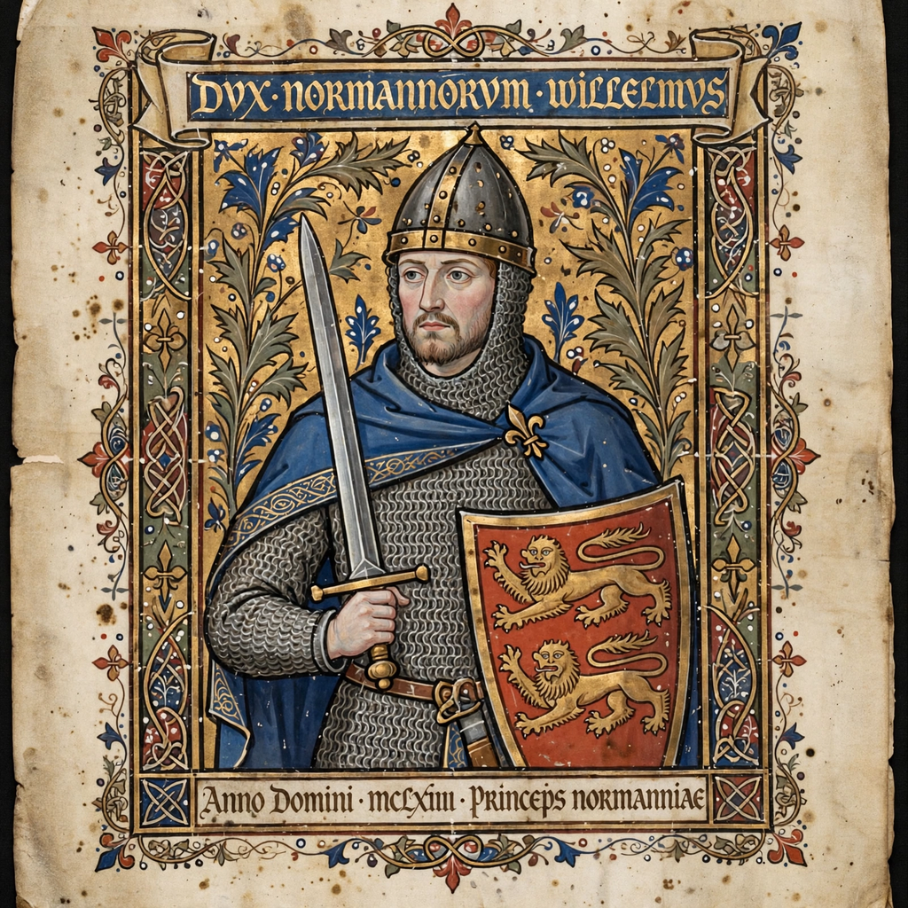

Robert Guiscard
| Robert Guiscard | |
|---|---|
 | |
| Born | c. 1015, Hauteville, Normandy |
| Died | 17 July 1085, Cephalonia |
| Title | Duke of Apulia and Calabria (from 1059) |
| House | Hauteville |
Robert Guiscard (c. 1015 – 17 July 1085) was a Norman adventurer remembered as the founder of Norman power in southern Italy. He conquered much of the Byzantine and Lombard south, took Sicily's conquest in hand with his brother Roger, expelled the Byzantines from Italy entirely by 1071, and in his last years attacked the Byzantine Empire itself across the Adriatic. His byname Guiscard — from the Old French viscart — means "the Cunning" or "the Wily".
Rise in Italy
Robert was a younger son of Tancred of Hauteville, a minor Norman lord. Arriving in Italy about 1047, he began as little better than a brigand leader in Calabria, living, in the chroniclers' telling, by ambush in the mountains. His elder half-brother Humphrey, Count of Apulia, gave him a foothold; after Humphrey's death in 1057 Robert succeeded him. At the Treaty of Melfi in 1059 Pope Nicholas II invested Robert as Duke of Apulia and Calabria and prospective lord of Sicily — in return for Norman support against the Emperor and the Roman aristocracy, a bargain that legitimised the conquests.
Conquests
With his younger brother Roger, Robert began the conquest of Muslim Sicily in 1061, taking Messina and eventually Palermo (1072). On the mainland he extinguished Byzantine rule in Italy with the capture of Bari in 1071, and took Salerno from his Lombard brother-in-law in 1076–77, making it his capital. His relations with the papacy were turbulent: he was excommunicated repeatedly, yet in 1084 he marched to Rome and rescued Pope Gregory VII from the Emperor Henry IV — in a rescue so violent that Norman troops sacked the city and Gregory had to flee with his protectors to Salerno, where he died in 1085.
War with Byzantium and death
In 1081 Robert invaded the Byzantine Empire, defeating the Emperor Alexios I Komnenos at Dyrrhachium — a battle in which the future chronicler Anna Komnene's family narrowly escaped. Distracted by revolts and the German invasion of Italy, he returned in 1084, recovered Corfu, and died of fever at Cephalonia in July 1085. His widow and sons quarrelled over the succession; the duchy passed to Roger Borsa, while Bohemond, his son by his first marriage, carved out the Crusader principality of Antioch.
Robert's epitaph at Venosa punned that he was "the terror of the world" (terror mundi). Dante placed him in Paradise among the warrior spirits in Mars.